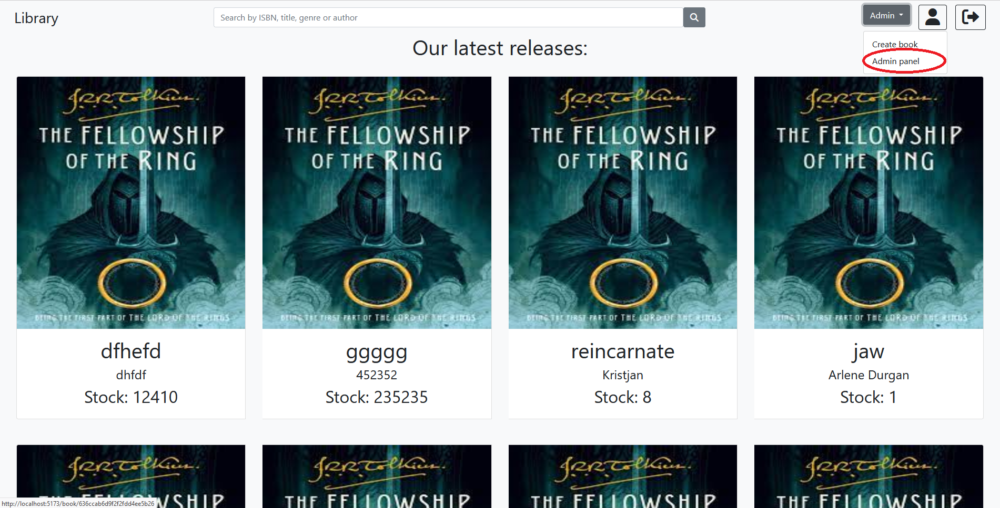

Granting privileges to other users
Here you can find out how to grant privileges to other users
NB: You have to be logged in and you must have admin privileges. Find out how to login
here
Click on the admin dropdown button and select admin panel

At the bottom of the page fill out the form with the username of the user you want to make admin and click "Make user admin"